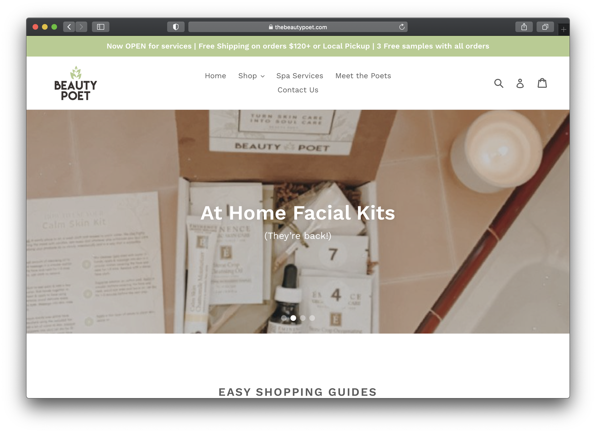

Final project proposal
Introduction
Leafworks
Leafworks is a family-owned organic beauty and cosmetics store by mother daughter duo, Angel and Skylar. Together they have develop this company to follow their passions for self-care, wellness, and holistic health. With a shared love to make others feel spirited and beautiful, the dynamic duo has created a place for everyone to feel relaxed and rejuvenated.
Target audience
Affluent early adults who shop in boutiques with high regard for their personal appearance. Some may call them self-involved, but the client sees it as self-love and appreciation.
They way the present themselves gives them power and empowers them in their daily lives which is why they keep their personal appearance at such regard. As such they seek out unique and natural skincare and cosmetic remedies to rejuvenated their physical appearance.
Comparative analysis
Beauty Poet

Bluemercury
Bath & Bath Bodyworks


Website content
Home
Unleash your inner goddess! Leafworks is a locally-owned, organic beauty supplies store in San Luis Obispo, California. Run by a mother daughter duo, the mission of this business is to make you feel beautiful.
[Beauty supplies]
Products
- Rose Deodorant | $20
- Coconut Firming Body Lotion | $28
- Mango Body Lotion | $25
- SPF 50 Tinted Sunscreen | $20
- Sandalwood Moisturizing Lotion | $28
- Lavender Lotion | $25
- Mineral Scrub | $30
- Coconut Sugar Scrub | $25
- Coconut Sugar Scrub | $25
- Mango + Lavender Body Scrub | $25
- Clay Face Mask | $30
- Seaweed Rejuvenating Face Mask | $28
[Beauty supplies]
About Us
Leafworks is a family-owned organic beauty and cosmetics store by mother daughter duo, Angel and Skylar. Together they have develop this company to follow their passions for self-care, wellness, and holistic health. With a shared love to make others feel spirited and beautiful, the dynamic duo has created a place for everyone to feel relaxed and rejuvenated.
Angel
Mother of Skylar, Angel grew up in Beverly Hills, California and has always been surrounded by glitz and glam. After moving to San Luis Obispo to get more in touch with her roots, Angel looked to bring the glam back into her life.
[Angel image]
Skylar
Raised by her mother in SLO, Skylar has had a different view of the world. Currently getting her degree in Agricultural Business at Cal Poly, Skylar is passionate about the natural world. An avid Buddhist, Skylar has always found stability in inner peace.
[Skylar image]
Contact Us
Boutique Hours:
- Monday 10a.m.-6p.m.
- Tuesday 10a.m.-6p.m.
- Wednesday 10a.m.-6p.m.
- Thursday 10a.m.-6p.m.
- Friday 10a.m.-6p.m.
- Saturday 10a.m.-6p.m.
- Sunday closed
Contact Information
Phone: (123) 456-7890
Email: information@leafworks.com
[Spa image]
Location
Come visit us at 1234 Monterey Street, San Luis Obispo, CA 93405